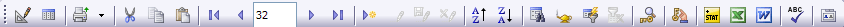
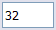
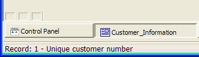

Using a Form
Click the Forms tab in the Control Panel, and double-click a form to open it.
The Default Form displays all the fields in the table. To open the Default Form from the Control Panel :
Click the Tables/Sets tab in the Control Panel.
Right-click a table and select Open Default Form.
To open the Default Form while viewing a browse:
Click the Form View button
 on the toolbar or press F8.
on the toolbar or press F8.
You can navigate within a form using the keyboard and mouse. The Form View Toolbar at the top of the form has navigation buttons for switching records:

Form View Toolbar
The table below explains each navigation button and its keystroke equivalent:
|
Keystroke |
Button |
Action |
|
CTRL HOME |
|
Move to the first record in the table. |
|
PAGE UP |
|
Move back one record. To scroll backward, click and hold. |
|
PAGE DOWN |
|
Move forward one record. To scroll forward, click and hold. |
|
CTRL END |
|
Move to the last record in the table. |
To move the cursor from field-to-field or object-to-object within a Form, either click the control (field) to activate it, or use the following keyboard commands:
|
Keystroke |
Action |
|
UP ARROW |
Move to the previous field or object |
|
DOWN ARROW |
Move to the next field or object |
|
LEFT ARROW |
Move left one field or object |
|
RIGHT ARROW |
Move right one field or object |
|
F8 |
Switch between form and browse view |
|
CTRL UP ARROW |
Move to the first field or object |
|
CTRL DOWN ARROW |
Move to the last field or object |
|
F6 |
Move out of an embedded Browse |
|
ALT DOWN ARROW |
Activate drop-down list boxes and smart fields |
|
ENTER |
Move to the next field or object, or push a button |
|
TAB |
Move forward one field or object |
|
SHIFT TAB |
Moves backward one field or object |

Record Selector
You can also use the Record Selector to quickly navigate to a particular record. Type a record number in the Record Selector field and press ENTER.
An Alpha Anywhere form has three boxes at its lower left corner. This is the Form Status Bar. The first button shows an icon if you are in "enter record mode". The second icon shows if there is a filter that is active. The third icon shows if the current record is 'marked'.

Alpha Five gives you two choices for data entry on forms and browses: modal and modeless.
|
Data Entry Mode |
Description |
|
Prevents users from making edits, unless specific actions are taken. In modal data entry mode:
| |
|
Users can edit any fields or records without taking prior actions. If the data entry style is modeless, you can edit any fields or records without first selecting Change Record or Enter New Record mode. While modeless data entry is convenient, it allows accidental field editing.
|
To set the system data entry mode:
Select View > Settings.
Expand the System menu, and select Data Entry.
The Settings dialog box displays the Data Entry Style dialog. The default system data entry style is modeless.
Change the data entry style by selecting "Modal".
Your selection specifies the data entry mode for a specific form or browse. Selecting System Default applies the View > Settings > System > Data Entry settings.
Entering and Changing Data in a Form
To enter or change the value in any field:
Place the cursor in the field and start typing. If the current field value is highlighted, it will be replaced. Otherwise, the typed text is inserted at the cursor location.
Double-click on the field or press F2 to create an insertion point.
If you are unable to enter or change data, select Form > Allow Edits or press F3. Allow Edits enables and disables data entry, and can be used as a safety switch to prevent overwriting field values.
Alpha Five gives you two choices for data entry on forms and browses: modal and modeless.
Modal data entry prevents users from making edits, unless specific actions are taken.
With modeless data entry, you can edit any fields or records without taking prior actions. The default system data entry style is modeless. For more information on modal and modeless data entry, see Data Entry.
To add a new record, you need to open a blank record. Do any of the following to open a blank record:
Click the New Record button on the toolbar.
Select Records > Enter New Record.
Use the keystroke: CTRL E.
Navigate to the last record in the table, and press Enter.
Once your new, blank record appears, you can begin entering data into the record. The new record is added to the end of the table.
The undo command lets you reverse the most recent changes made to a record. Use any of the following to undo recent changes:
Click the Cancel Changes button
 on the toolbar.
on the toolbar.Click Edit > Undo.
Press ESCAPE.
You can only undo changes to a record while you are still viewing that record. Once you leave (navigate away from) the record, changes are saved and undo won't work. Also, you can only undo changes to a field while the cursor remains in the field. Once you move your cursor to a different field, the Undo operation won't work.
However, as long as you are still viewing the same record, clicking the Cancel Changes button (or ESCAPE ) will undo all changes to the record.
You can use the Find and Replace dialog box to find a text value in a record, by searching in just the current record, or in multiple Alpha Five records, and replace the found text with different text.
To use Find and Replace when viewing a form or browse, select Edit > Find and Replace.
Display the Replace tab if you want to replace text.
Enter the text to find in Find What.
Optionally, enter the text to replace in Replace With.
Optionally, limit the search by selecting "Current Record" or "Current Field" in the Where to Search group.
Optionally, refine how you are searching by checking the Match Case check box.
You can further refine your search by selecting "Whole Words" or "Beginning of Field" in the What to Match group.
Select "Backward" in the Direction list to search backwards.
Click Find Next to move the cursor to the next occurrence.
Click Replace if you want to replace a single occurrence. The cursor moves automatically to the next occurrence.
Click Replace All if you want to replace all occurrences.
Click Cancel to exit.
You can confirm each replacement before it is made.
Changes you make to a record (including entering a new record) are saved when you leave the record. For example, if you change a field value and press the Next button, Alpha Anywhere saves the changes you made to the previous record.
To save changes while viewing a record, click the Save Record button on the toolbar or press F9.
How to use Speed Typing as a shortcut for entering frequently used values.
Shortcut Keys allow access to menu commands with a single keystroke.
Find and Replace a text value in a record or in multiple Alpha Five records.
Duplicating a Record is useful when you have repetitive data.
You can print or email records from within form or browse view.
The Print Layout Genie lets you print, preview, email, or save to a file all the records in the current table or set, using any of the layouts that have been defined for that table or set.
The Print Genie lets you select and order, and then print, preview, email, or save to a file records from the current table or set, using any of the layouts that have been defined for that table or set.
If you deleted records in error, this is how to Undelete Records.
Alpha Anywhere writes out an ASCII file which is an Audit Trail of all changes made to a record. The audit trail shows the date and time of the change, the original value in the field, and the new value in the field.
The Alpha Anywhere Spell Checker lets you check the current record, the current selection of records, or the current field.
The Field Statistics window displays several different statistics for a field, such as total, average, minimum and maximum.
The Follow Changes and Enters function repositions the record pointer when you change or add a key value in the current index.
If a form has an embedded browse, you can use the Zoom to Record command to switch to a user-selected form to display more detail on the current record in the embedded browse.
Alpha Anywhere provides a variety of tools for finding, selecting, and ordering records. You can perform powerful and complex searches to group your data into lists that match your specific criteria.
With Query by Form you can order records based on the contents of one to five different fields.
The Query Genie lets you create powerful search and sort operations by navigating through easy-to-understand dialog boxes. It is perhaps the easiest way for an inexperienced user to define complex searches of their database.
The Query by Expression dialog box is available when viewing both forms and browses, and lets you filter and sort records by directly entering filter and order expressions.
Multi-Select Queries provides a technique for building queries that select a set of records by record number.
The Select Filter dialog box lets quickly perform one of several pre-defined queries.
The Navigator is a dialog box that displays all the fields on a form or browse in a tree control. With the Navigator you can instantly navigate to any field on the form or browse.
The Quick Export to Excel command exports the current selection of records in the current form or browse to Excel and opens Excel with the records loaded into a new worksheet.